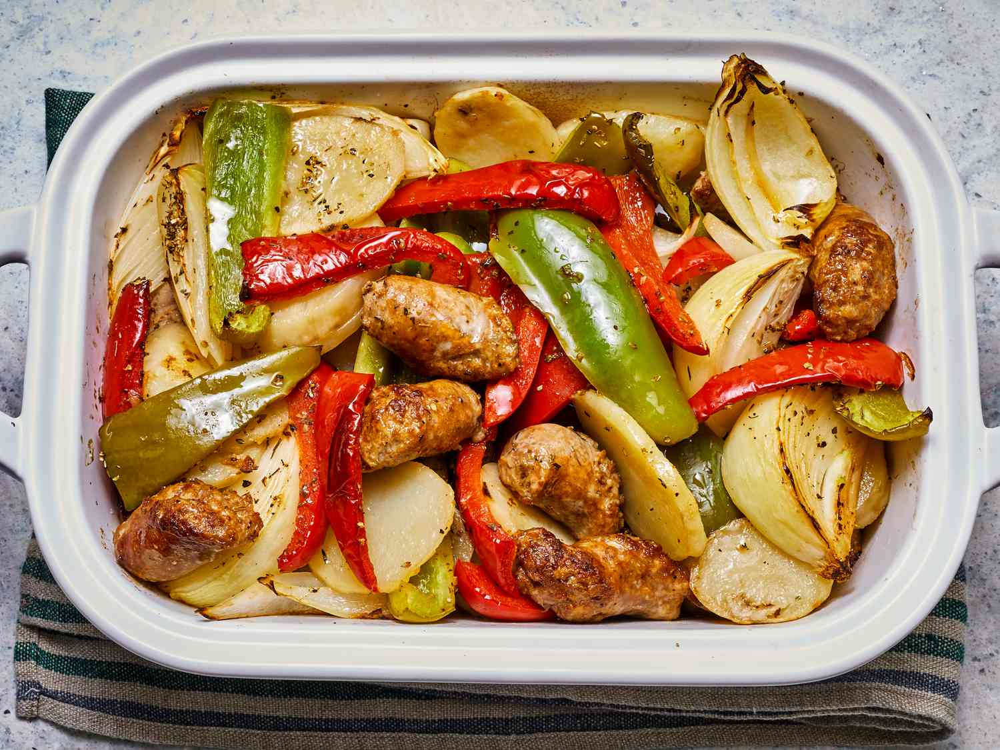
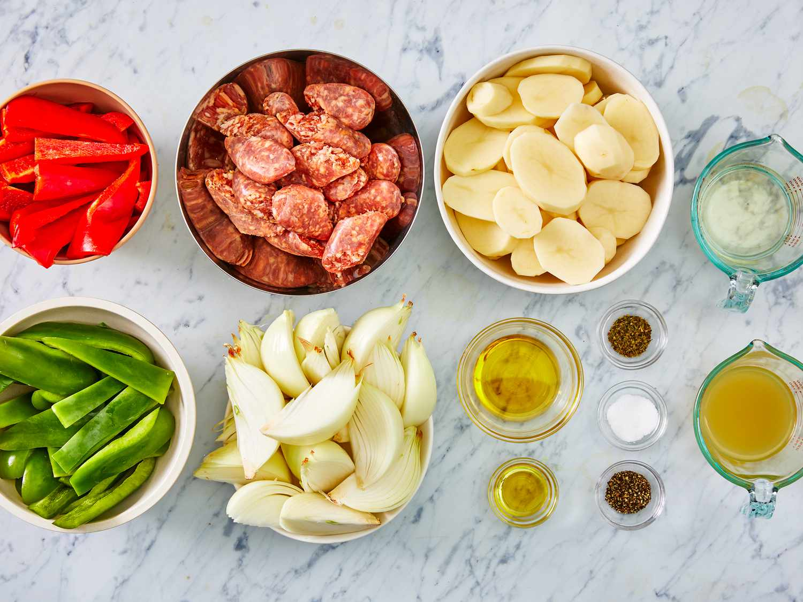
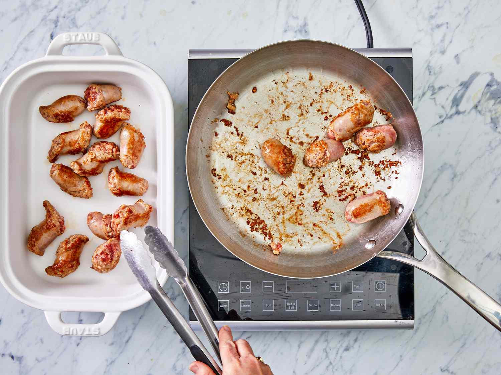
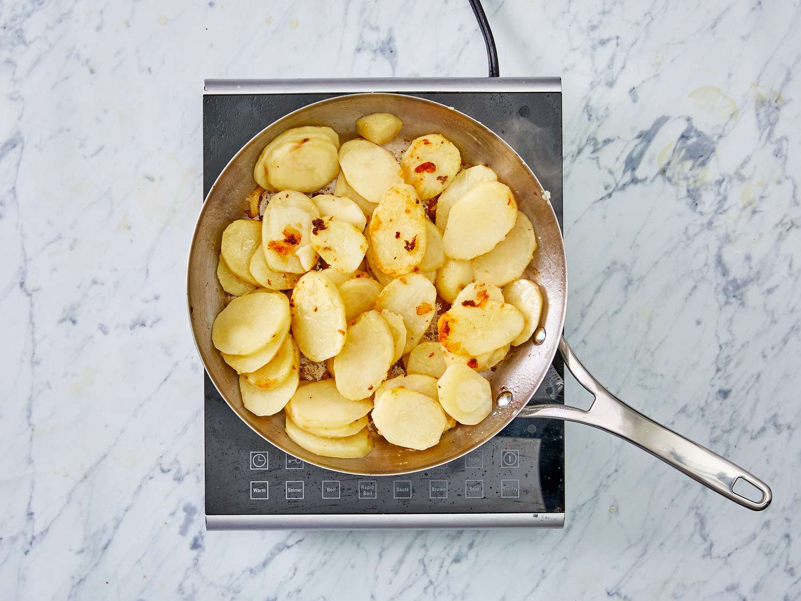
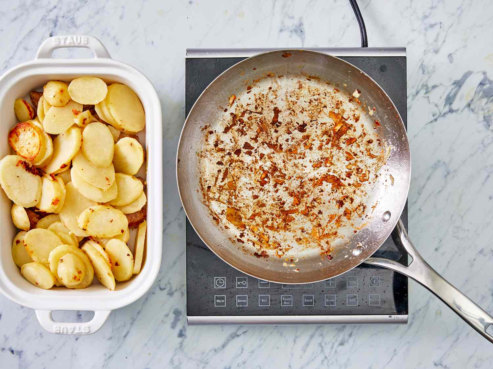
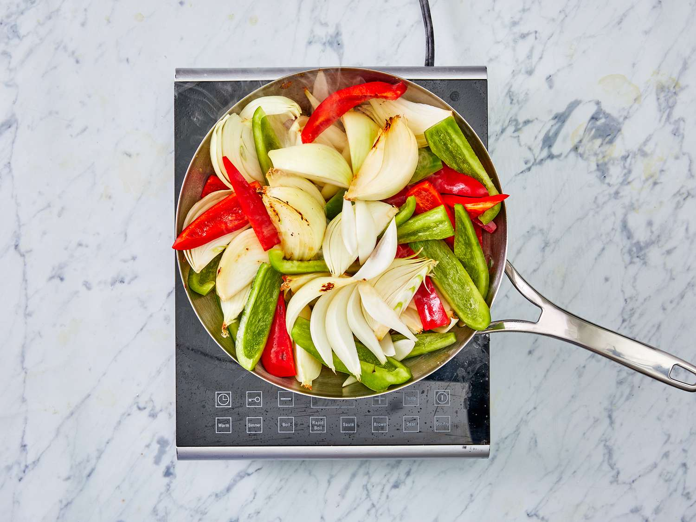
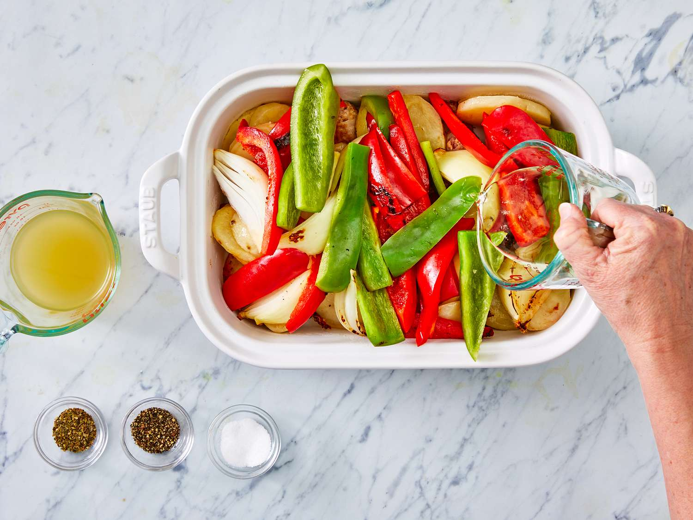

This sausage and potato bake is an Italian comfort food classic! The smell of this cooking in my kitchen transports me back to playing on the street in front of my Papa and Gigi’s house in Brooklyn. I make 2 trays of this for every family get-together, and it’s gone in a flash!

If you’re looking for a comforting meal that is made with ingredients you currently have in the fridge, then you’ve found the right recipe for you. This recipe with sausage, potatoes, onion, and peppers starts out in the skillet, but turns into a bubbly casserole-like dish after a trip to the oven.
Everyone in your family will love it and you will have found a new go-to recipe that has hearty and filling ingredients — it’s a win-win!
The ingredients in this bake are quite simple — and you probably already have most of them on hand. Here’s what you’ll need:
The olive oil is used for cooking your sausage, potatoes, and veggies in the skillet.
Choose your favorite Italian sausage (mild, medium, or hot will work) for this recipe.
You can use whatever potatoes you like, as long as you peel and slice them. But for faster cooking and less chopping, try smaller red potatoes or fingerlings so you can eat them whole.
Both red and green bell peppers are used in this recipe — and, hey, if you have yellow or orange, throw those in too!
Yellow onions will work best here for their caramelized flavor.
White wine adds flavor to the veggies and sausage. Plus, it keeps the dish moist during baking.
This recipe uses chicken stock, though you can use any stock you have on hand in a pinch.
Lightly season the sausage and vegetables with Italian seasoning, salt, and pepper.
As a main course, this dish already has a lot going on: meat and veggies in a savory sauce. But there’s always room for extra sides.
You can serve it alongside coleslaw, potato salad, macaroni and cheese, or even more grilled vegetables.
Store leftovers in an airtight container in the refrigerator for up to 3 to 4 days. Reheat in the oven at 350 degrees F (175 degrees C) or in the microwave until heated through to 165 degrees F (74 degrees C).
This dish can be frozen in an airtight container for up to 2 months; thaw in the refrigerator overnight before reheating.
“I found this recipe a few years ago, marvelous! I’ve made it several times, occasionally making small changes depending on what I have on hand. It doesn’t matter, it’s always delicious. I personally never add the wine, I use additional stock, still delicious,” says Barbs favorites.
“Great easy recipe. Would work with any kind of sausage. I used a spicy smoked polish sausage. After browning the sausage, potatoes and vegetables I had a lot of carmelized brown goodness left in the bottom of my skillet. So I deglazed the pan with the wine and chicken stock before pouring the liquid over the ingredients in the baking dish,” according to Bruce.
“I loved it. It was so flavorful and easy to make. Even my 5yr old niece who is a notoriously picky eater ate it up quickly. The only change I made was subbing the wine for more chicken broth because I didn’t have any wine. I don’t know if that made a big difference to the taste, but it was excellent as is,” raves Samantha Cobb.
Editorial contributions by Bailey Fink
Gather all ingridients.

Preheat the oven to 400 degrees F (200 degrees C).
Heat 2 teaspoons olive oil in a large skillet over medium heat, and cook and stir the sausage until browned, 5 to 10 minutes. Transfer cooked sausage to a large baking dish.

Pour 1/4 cup of olive oil into the skillet, and cook potatoes, stirring occasionally, until browned, about 10 minutes.

Place the potatoes into the baking dish, leaving some oil in the skillet.

Cook and stir green and red peppers and onions in the hot skillet until they are beginning to soften, about 5 minutes.

Add the vegetables to the baking dish. Pour wine and chicken stock over the vegetables and sausage, and sprinkle with Italian seasoning, salt, and pepper.

Gently stir sausage, potatoes, and vegetables together.
Bake in the preheated oven until hot and bubbling, 20 to 25 minutes. Serve hot.